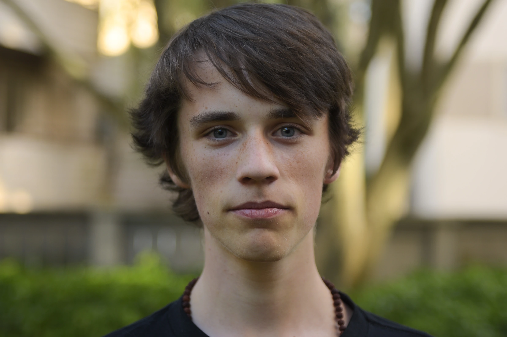
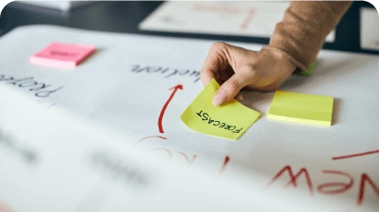

Impact Update
10,000 Trees Planted: Our 2025 Reforestation Update
In 2025, we hit a number we'd been working toward for a while: 10,000 trees planted through verified reforestation partners. Here's what that actually involved, why we think it matters, and where the program goes next.

Founder, Oasis of Change •

Why we plant trees
We build websites. Websites run on servers. Servers use electricity. That electricity has a carbon cost. We try to reduce that cost as much as we can through efficient code, green hosting, and lightweight design. But some emissions are unavoidable, and tree planting is how we address what's left.
A mature tree absorbs roughly 22 kg of CO2 per year. Over a 40-year lifespan, that's close to a metric ton of carbon removed. By tying our planting directly to our digital operations, we're connecting the carbon we produce with the carbon we help take out of the atmosphere.
It's also not purely about carbon accounting. Trees restore degraded land, support biodiversity, prevent soil erosion, and create work for local communities doing the planting and maintenance. The environmental argument is solid, and the human one is hard to ignore.
The milestone: 10,000 trees across multiple sites
Over the course of 2025, we funded the planting of 10,000 trees across reforestation sites in British Columbia, Kenya, and Madagascar. Each site was selected through verified planting partners who provide GPS-tagged planting records, survival rate monitoring, and long-term maintenance commitments. We did not simply hand over funds and walk away. Every planting is tracked, reported, and auditable.
In British Columbia, our planting focused on areas affected by wildfire, where native conifer species are being reintroduced to stabilize hillsides and rebuild forest canopy. In Kenya, we supported agroforestry projects that combine fruit-bearing trees with food crops, providing both carbon sequestration and economic value to smallholder farmers. In Madagascar, the focus was mangrove restoration along coastal zones, which sequesters carbon at rates three to five times higher than terrestrial forests and protects shorelines from storm damage.
10,000 is a nice round number, but that's not really why it matters. What matters is that it took sustained effort across multiple years. This isn't a one-off PR campaign. It's built into how we fund and operate.
Tree planting is not enough on its own
Planting trees does not give anyone a pass to keep polluting. The most useful thing any organization can do is cut emissions at the source. For digital organizations, that means efficient code, compressed images, green hosting, fewer third-party scripts, and honestly asking whether every feature needs to exist.
A tree planted today won't hit full carbon absorption for 10 to 20 years. The carbon from a bloated website hits the atmosphere immediately. The order matters: reduce first, then offset what's left, and be transparent about both.
That's why tree planting is one layer for us, not the whole strategy. The rest includes energy-efficient web development through Web-Ready, transparent impact measurement through our dashboard, and work on industry standards through VCASSE and Sustainable Technology Week.
Our approach
"Planting trees means the most when it's paired with genuine emission reductions, transparent reporting, and a willingness to hold ourselves accountable for the full lifecycle of our digital work."
Transparency and reporting
Environmental claims without evidence are worse than saying nothing. Every tree we fund is documented. Our Tree Planting Statement details methodology, partnerships, and planting records. The Impact Dashboard shows live data on carbon offsets, website efficiency, and project-level performance.
If an organization tells you it planted trees but can't show you where, when, and with whom, that's a problem. We publish this data because we want supporters, partners, and critics to be able to verify every claim. The data is there. Check it.
Accountability also means being upfront about what doesn't work. Not every tree survives. Our sites average 85% survival, which is strong for reforestation, but it still means about 1,500 of those trees may not reach maturity. We account for that in our offset math and fund replacement plantings where needed.
What comes next in 2026
In 2026, we are expanding our reforestation work in three directions. First, we are adding new planting partnerships in Southeast Asia, focusing on peatland restoration projects that address one of the most carbon-dense ecosystems on the planet. Second, we are deepening the integration between our tree planting program and our project-level carbon tracking, so that every website we build through Web-Ready will have its estimated lifecycle emissions matched with a specific, traceable planting allocation.
Third, we are working with our partners to improve long-term monitoring. Planting a tree is the beginning, not the end. The real environmental value comes from trees that survive, grow, and become part of a functioning ecosystem over decades. We are investing in better satellite monitoring, more frequent on-the-ground survival audits, and longer partnership commitments that extend maintenance funding from three years to five.
None of this replaces the harder work of cutting digital emissions directly. But done with honesty and rigor, reforestation is a real tool. 10,000 trees is a good start. We're more interested in what happens from here.